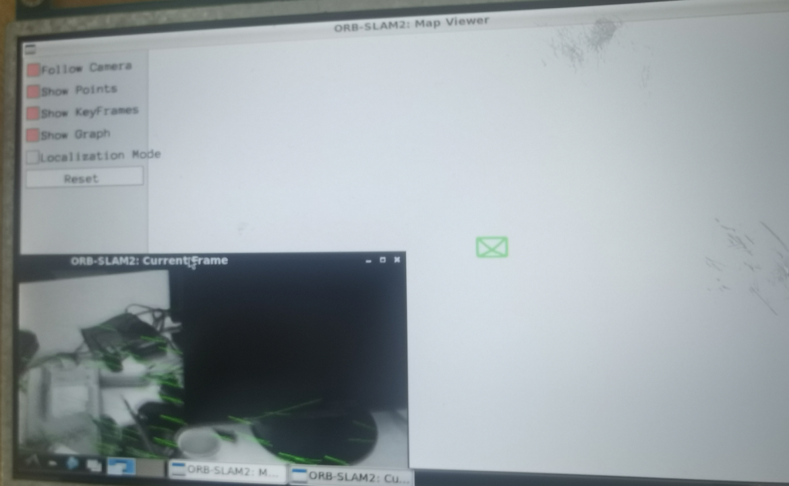
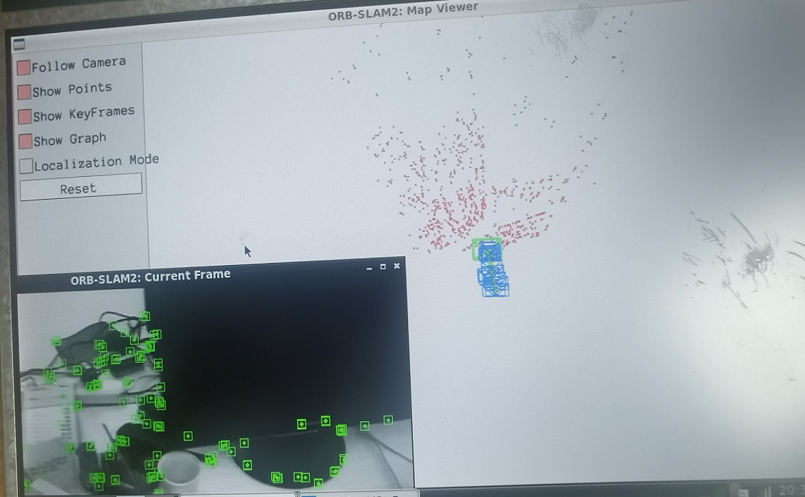

在rk3399平台上编译orbslam2
在rk3399平台上运行orbslam2
之前的rk3399的矿板终于能派上用场了，打算在嵌入式板子上跑orb-slam2试试。

环境准备
orb-slam2需要一大堆的前置库，下面来安装这些前置库，虽然orb-slam2已经有些年头了，但是我们还是要安装比较新的库(除了opencv)，一方面库都是学新不学旧，另一方面，这些库也全是编译安装的(因为是arm平台)，找老版本好麻烦的。
orb-slam2的前置库有：
- eigen3：head-only的库，直接从apt安装即可
- Pangolin：一个用于可视化的库，拉下最新的源码，编译安装
- g2o：图优化的库，拉下最新的源码，编译安装
- opencv3：不能使用opencv4，我下了opencv3的源码，然后编译安装
- DBoW2：一个用于词袋的库，拉下最新的源码，编译安装
- ros：可选，我装了ROS1的noetic版本
上述环境安装步骤已经很多了，就不再赘述了。
orb-slam2的编译
首先利用加速镜像来获取到源码
1 | git clone https://gitclone.com/github.com/raulmur/ORB_SLAM2.git |
然后修改CMakeLists.txt，将C++标准改为14，不能使用17或11
1 | sed -i 's/++11/++14/g' CMakeLists.txt |
同时修改CMakeLists.txt，再把eigen3依赖改了，否则会报错找不到
1 | find_package(Eigen3 REQUIRED NO_MODULE) |
接下来修改loopclosing.h文件，添加一行头文件，这个是解决usleep函数找不到的问题
1 |
同时，修改loopclosing.h文件，将这一行
1 | typedef map<KeyFrame *, g2o::Sim3, std::less<KeyFrame *>, |
改为
1 | typedef map<KeyFrame *, g2o::Sim3, std::less<KeyFrame *>, |
否则会导致一个定义错误。
然后接下来就可以执行非ros版本的编译了
1 | sudo chmod +x build.sh |

orb-slam2的运行
由于这里编译了不带ros的版本，所以直接找个数据集来测试一下slam程序。
首先下载一个数据集，并解压缩，数据集可以在这里找
1 | wget https://cvg.cit.tum.de/rgbd/dataset/freiburg1/rgbd_dataset_freiburg1_xyz.tgz |
然后进入编译好的orb-slam2的目录，执行单目程序，注意第三个参数是之前下载好的数据集
1 | cd ORB_SLAM2/Examples/Monocular/ |
然后就可以看到orb-slam2正常运行了。由于单目slam需要初始化，所以很明显前一段时间是没有位姿的，而初始化完成后才会出现位姿。

